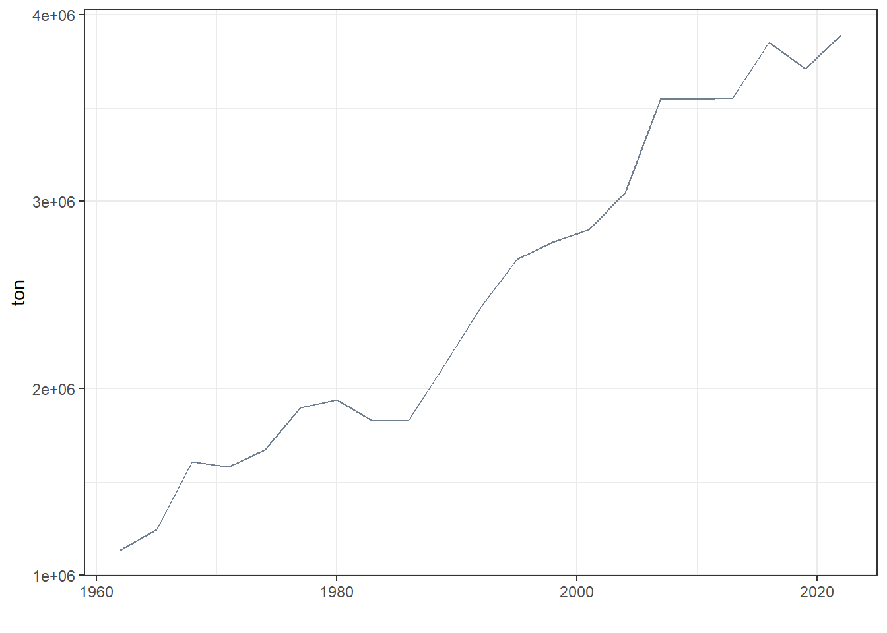
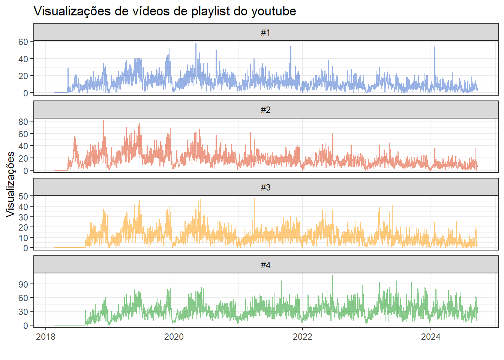
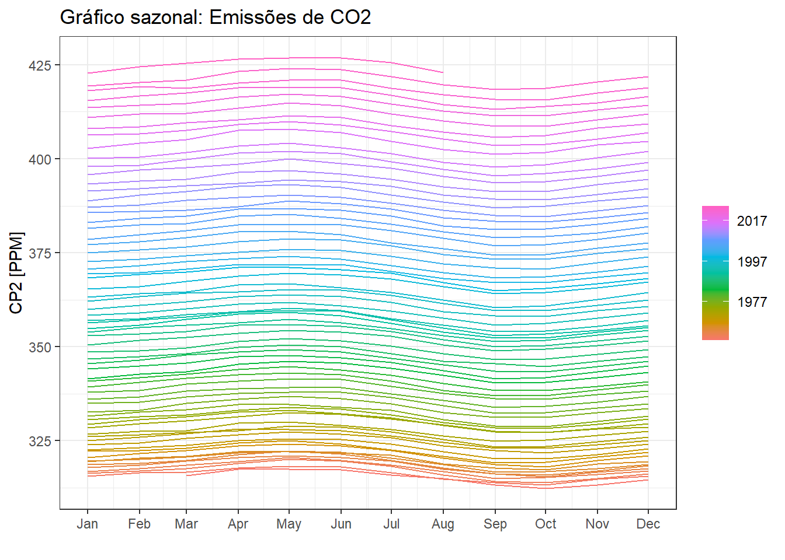

| index | value |
|---|---|
| 1980 Feb | 4.62 |
| 1980 Mar | 6.04 |
| 1980 Apr | 5.29 |
| 1980 May | 5.70 |
| 1980 Jun | 5.31 |
| 1980 Jul | 5.55 |
1 Introdução e gráficos
1.1 Introdução à Previsão e Séries Temporais
Uma série temporal consiste em um conjunto de observações de uma variável aleatória ordenada no tempo. A Análise de Séries temporais visa o estudo e obtenção de modelos preditivos para este tipo de dados. O objetivo ao final é realizar previsões com o modelo obtido, de forma a viabilizar ações de planejamento, prever cenários e possibilidades.
A previsão é importante em diversos contextos das engenharias, administração e ciências. Por exemplo, para decidir o nível de produção e planejar o próximo período é importante prever a demanda. Para avaliar se um investimento é viável é importante prever a sua rentabilidade. Para planejamento dos sistemas energéticos é importante prever o consumo de energia. Para prever a capacidade de produção de energia hidroelétrica é preciso prever a precipitação.
1.2 Exemplos de séries e visualizações
1.2.1 Séries univariadas
Na Figure 1.1 observa-se graficamente a série temporal do índice de preços ao consumidor (IPCA), com frequência mensal a partir de 1980. A série foi obtida em http://www.ipeadata.gov.br. As primeiras observações da série também são exibidas na Table 1.1. Observa-se claramente como a inflação no país foi controlada a partir da adoção do plano real.

Para visualizar melhor como o IPCA variou nos últimos 20 anos, pode-se selecionar os dados a partir do ano 2000. O resultado é plotado na Figure 1.2.

A Table 1.2 exibe as primeiras observações da série temporal de volume de carros produzidos no Brasil a partir de 1990. A série foi obtida em https://anfavea.com.br/site/edicoes-em-excel/ e apresenta frequência mensal.
| data | valor |
|---|---|
| 1990-02-01 | 57258 |
| 1990-03-01 | 32740 |
| 1990-04-01 | 32812 |
| 1990-05-01 | 58464 |
| 1990-06-01 | 37632 |
| 1990-07-01 | 43697 |
A série é plotada na Figure 1.3. Pode-se observar alguns períodos de queda no volume, por exemplo, próximo de 2015 durante a crise política do país e em 2020 durante a pandemia, onde a produção chegou a níveis anteriores aos dos anos 2000.

1.2.2 Séries temporais multivariadas
Na Table 1.3 são observados séries de produção de quatro tipos de energia para o ano de 2023 no Brasil. Os dados são fornecidos em frequência horária e estão disponíveis em https://dados.ons.org.br/group/programacao-da-operacao.
A série temporal multivariada é plotada na Figure 1.4. Pode-se observar o aumento na produção das fontes complementares quando a hidráulica apresentou declínio no período mais seco do ano.
| din_instante | name | value |
|---|---|---|
| 2023-01-01 00:00:00 | hidraulica | 39057.309 |
| 2023-01-01 00:00:00 | termica | 5698.335 |
| 2023-01-01 00:00:00 | eolica | 14138.750 |
| 2023-01-01 00:00:00 | solar | 21.155 |
| 2023-01-01 01:00:00 | hidraulica | 39624.650 |
| 2023-01-01 01:00:00 | termica | 5727.550 |
A série temporal multivariada é plotada em múltiplos painéis na Figure 1.5.
As primeiras observações da série temporal multivariada de produção de milho, mandioca e batata no Brasil é observada na Table 1.4. Os valores são observados de 3 em 3 anos, https://www.fao.org/faostat/en/#data/QCL. A série completa é plotada na Figure 1.6. Observa-se que a série de milho apresenta um padrão linear até 2005 e depois outro padrão linear porém, com maior inclinação, destacando-se em relação às outras séries. A produção de mandioca apresenta cíclico irregular com tendência de queda.
| Item | Year | Value |
|---|---|---|
| mandioca | 1963 | 22248640 |
| mandioca | 1966 | 24710048 |
| mandioca | 1969 | 30073936 |
| mandioca | 1972 | 29828912 |
| mandioca | 1975 | 26117616 |
| mandioca | 1978 | 25459408 |
A série de produção de batata é plotada individualmente na Figure 1.7. Devido a grande diferença em relação aos níveis de produção de milho, aparentemente parecia próxima de estacionária, porém ao plotá-la individualmente, observa-se uma tendência linear de aumento de produção deste item.

As últimas observações de mais um exemplo de série temporal multivariada são observadas na Table 1.5 considerando dados de visualizaçoes de 4 vídeos da playlist Tolerâncias e ajustes do Canal da engenharia de manufatura e qualidade
| Date | Views | Video |
|---|---|---|
| 2024-09-15 | 15 | #4 |
| 2024-09-16 | 35 | #4 |
| 2024-09-17 | 38 | #4 |
| 2024-09-18 | 27 | #4 |
| 2024-09-19 | 40 | #4 |
| 2024-09-20 | 26 | #4 |
A série multivariada é plotada na Figure 1.8. A série inicia em 2018, ano de início do canal, porém só tem dados segundo a data de lançamento de cada vídeo.

A série do vídeo 4 plotado a partir de setembro de 2018 é exibida na Figure 1.9.

1.2.3 Graficos de sazonalidade
Pode-se visualizar os dados da série do vídeo 4 em subséries anuais, de forma a ver a sazonalidade presente nos dados. A Figure 1.10 expõe o gráfico. Os dados foram agregados mensalmente. Pode-se visualizar os picos de visualizações em Abril a Junho e de Setembro a Outubro coincidindo com períodos de picos de estudos nos primeiro segundo semestres anuais.
Pode-se plotar o gráfico sazonal visualizando a variação anual dentro de cada mês, conforme Figure 1.11.

1.2.4 Correlação entre séries
Em algumas situações é importante agregar os dados de forma a facilitar a interpretação. A Figure 1.12 plota a mesma série da Figure 1.4, porém agregada diariamente. Fica mais fácil notar a correlação negativa entre a série hidráulica e as demais.
Pode-se visualizar a correlação aos pares entre os diferentes tipos de energia considerados na Figure 1.13. Os gráficos de dispersão e as respectivas correlações são observadas aos pares.
Para uma interpretação ainda mais fácil realiza-se uma última agregação a nível mensal, conforme Figure 1.14.
Observa-se na Figure 1.15 que a correlação considerando a frequência mensal fica muito mais clara.

1.2.5 Gráficos de decomposição de séries temporais
A Figure 1.16 apresenta a série temporal de níveis de CO2 na atmosfera medida no Observatório Mauna Loa, Havaí, desde 1958, https://climate.nasa.gov/vital-signs/carbon-dioxide. Observa-se um padrão de crescimento não linear com ciclos sazonais bem definidos.
A Figure 1.17 plota apenas os últimos 4 anos da série. Pode-se observar que os períodos sazonais de pico coincidem com o início da primavera no hemisfério norte, enquanto os vales são observados no período de crescimento das plantas, as quais capturam parte significativa do CO2 da atmosfera.

O gráfico sazonal também pode ser útil neste caso, conforme Figure 1.18. Observa-se claramente a sazonalidade com pico próximo de maio e declínio próximo de outubro. A tendência de aumento anual de emissões também fica clara na escala de cor.

Existem diversas formas de decompor séries temporais. A Table 1.6 expõe os resultados de uma decomposição aditiva da série CO2. A componente cíclica é removida e o restante é suavizado para encontrar uma tendência. O resíduo consiste na diferença entre a série original e a soma da tendência e da componente sazonal.
| CO2 | trend | season_year | remainder | season_adjust |
|---|---|---|---|---|
| 315.71 | 314.9477 | 1.0263767 | -0.2640423 | 314.6836 |
| 317.45 | 315.0187 | 2.2221543 | 0.2091377 | 315.2278 |
| 317.51 | 315.0898 | 2.7703197 | -0.3500701 | 314.7397 |
| 317.27 | 315.1608 | 2.2787986 | -0.1695914 | 314.9912 |
| 315.87 | 315.2266 | 0.8557299 | -0.2123500 | 315.0143 |
| 314.93 | 315.2924 | -1.0241591 | 0.6617119 | 315.9542 |
A Figure 1.19 expõe o resultado da decomposição da série de emissões de CO2. Observa-se claramente a separação da tendência e do padrão sazonal da série, facilitando a interpretação desta.